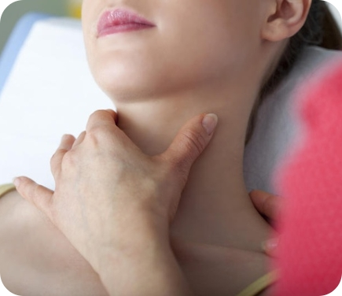

<section class="section about" id="about">
  <div class="container">
    <h2 class="section__title about__title">Что мы лечим</h2>
    <p class="section__text section__text_long">
      <span class="section__text section__text_colored">Проблемы</span> или
      причины выпадения
    </p>
    <p class="section__peculiarity section__peculiarity_long about__peculiarity">
      Причины выпадения и истончения волос
    </p>
    <div class="problems">
      <div class="problems__controls">
        <button class="btn propblem-btn">
          <span class="propblem-btn__icon">
            <svg class="icon" viewBox="0 0 30 30">
                <use xlink:href="../img/sprite.svg#stress_icon"></use>
             </svg>
          </span>
          <span class="propblem-btn__text">Стресс и образ жизни</span>
        </button>
        <button class="btn propblem-btn propblem-btn_active">
            <span class="propblem-btn__icon propblem-btn__icon_active">
              <svg class="icon" viewBox="0 0 30 30">
                  <use xlink:href="../img/sprite.svg#diseases_icon"></use>
               </svg>
            </span>
            <span class="propblem-btn__text">Заболевания щитовидной железы</span>
          </button>
          <button class="btn propblem-btn">
            <span class="propblem-btn__icon">
              <svg class="icon" viewBox="0 0 30 30">
                  <use xlink:href="../img/sprite.svg#pregnancy_icon"></use>
               </svg>
            </span>
            <span class="propblem-btn__text">Беременность и роды</span>
          </button>
          <button class="btn propblem-btn">
            <span class="propblem-btn__icon">
              <svg class="icon" viewBox="0 0 30 30">
                  <use xlink:href="../img/sprite.svg#vitamins_icon"></use>
               </svg>
            </span>
            <span class="propblem-btn__text">Дефицит микроэлементов в организме</span>
          </button>
          <button class="btn propblem-btn">
            <span class="propblem-btn__icon">
              <svg class="icon" viewBox="0 0 30 30">
                  <use xlink:href="../img/sprite.svg#covid_icon"></use>
               </svg>
            </span>
            <span class="propblem-btn__text">После COVID-19</span>
          </button>
          <button class="btn propblem-btn">
            <span class="propblem-btn__icon">
              <svg class="icon" viewBox="0 0 30 30">
                  <use xlink:href="../img/sprite.svg#pills_icon"></use>
               </svg>
            </span>
            <span class="propblem-btn__text">Принимаемые лекарства</span>
          </button>
      </div>
      <div class="problems__cards">
        <ul class="problems-list">
            <li class="problems-list__item problem-card">
                <div class="problem-card__image">
                    
                </div>
                <div class="problem-card__content">
                    <p class="problem-card__title">
                        Заболевания щитовидной железы
                    </p>
                    <p class="problem-card__text">
                        <b>Гормон щитовидной железы</b> играет важную роль в развитии и поддержании волосяных фолликулов. Когда в организме слишком много или недостаточно гормона щитовидной железы, это может «шокировать эндокринную систему» и привести к состоянию <b>длительного выпадения волос</b>. (Из-за неправильного функционирования щитовидной железы гормоны, которые необходимы для обмена веществ, в волосяных фолликулах не образуются). Плохой обмен веществ приводит к дефициту белков и витаминов в волосах, в связи с чем они не растут должным образом. Структура стержня становится <b>ломкая, сухая и волосы выпадают</b>
                    </p>
                    <a href="#" class="problem-card__link">
                        Подробнее
                    </a>
                </div>
            </li>
        </ul>
      </div>
    </div>
  </div>
</section>
